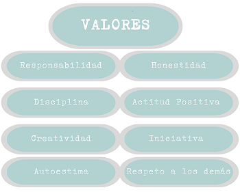

Escuela Preparatoria Francisco Martinez de la Vega
R E Q U I S I T O S
Perfil de Estudiante
Edad: Ser menor de 17 años
Haber concluido satisfactoriamente su educación secundaria (con certificado).
Ser estudiante de tiempo completo.
Buena Conducta

Requisitos para la Credencias del examen de selección y diagnostico
Presentarse en la fecha y hora señalada en la ficha de atención con la siguiente documentación:
Hoja de pre registro (lo realizarán vía internet, ingresar a la liga e imprimir. https://seer.gob.mx/siems/instituciones)
Copia fotostática del Acta de Nacimiento del estudiante
Constancia de estudios cursando el 3er año de secundaria o copia fotostática del certificado de secundaria
Tres fotografías tamaño infantil papel mate (blanco - negro o de color con ropa clara) recientes e iguales (NO INSTANTANEAS)
Original y copia del pago de cuota de derecho a examen $250.00 (DOCIENTOS CINCUENTA PESOS 00/100 M.N.) que se depositará en el Banco Banorte a nombre del estado de San Luis Potosí:
CUENTA No. 1166463593
Examen de Selección y Diagnostico
El examen se realizará el día 03 de junio a las 8:00 (presentarse con su credencial del trámite de preinscripción)
Entrega de resultados 16 de junio del 2023
Escuela Preparatoria "Francisco Martínez de la Vega"